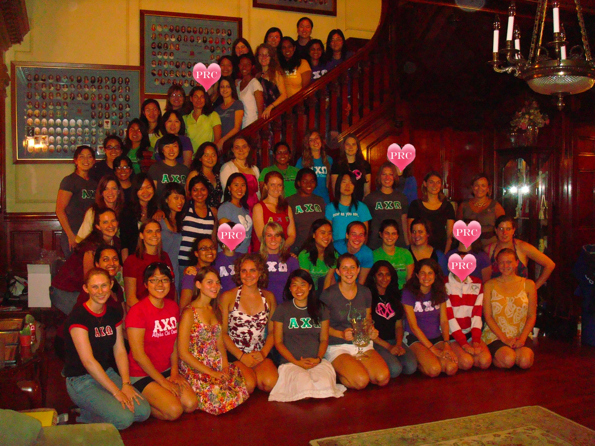

The Theta Omicron chapter of Alpha Chi Omega has over 130 student members, providing each other academic and social support. Leaders on campus, in the classroom, and in the community, we are dedicated to developing ourselves as successful students and members of society while strengthening our friendships and sisterhood.
Marsha King Grady, Alpha Chi Omega's National President, visited the Theta Omicron chapter at the end of August 2009 to present us with the National Council Trophy/Chapter of the Year Award . This award is the highest honor given by Nationals and is given to the collegiate chapter that demonstrates the highest standards of academic excellence, campus participation and leadership, sister unity, and Panhellenic spirit. Congratulations, MIT Alpha Chis!